145 photos · 29 cities · photo 1 (outlined) is the mosaic's large photo · generated 2026-11-07
Lake Chapala / Ajijic lake-chapala
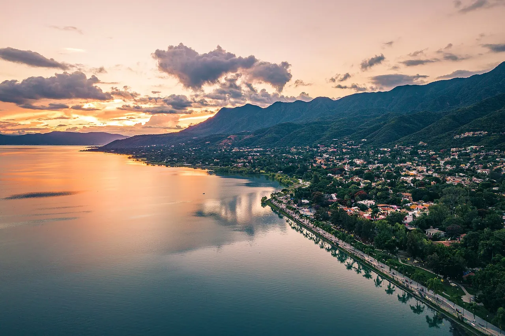
1. Ajijic's malecón and lakeside park along Lake Chapala at sunsetAlt: An aerial view at sunset of a lakeshore town with a palm-lined promenade, green mountains behind and the lake reflecting an orange skySimonVelazquez · CC BY-SA 4.0 · Commons · 1280×853 · focus 70% 50%
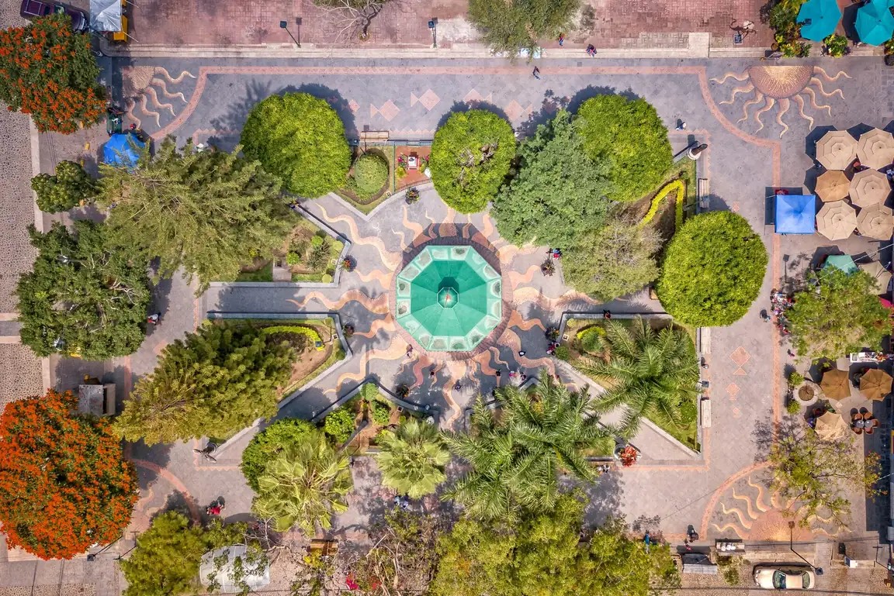
2. The kiosk and mosaic-paved plaza at the heart of AjijicAlt: An overhead view of a square with a green octagonal kiosk, patterned paving, round trees and café umbrellasSimonVelazquez · CC BY-SA 4.0 · Commons · 1152×769
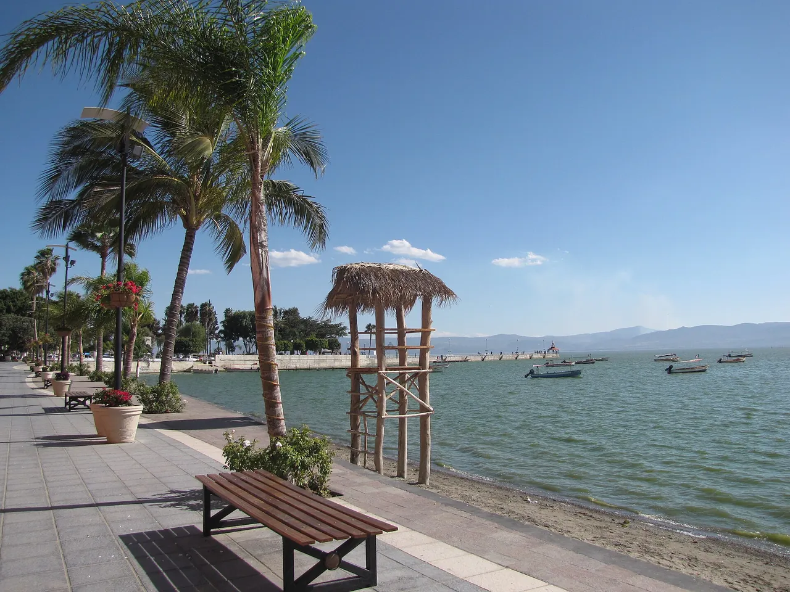
3. The palm-lined lakeside promenade on Chapala's malecónAlt: A paved promenade with palms, benches and flower pots beside the lake, with small boats and a pier under a blue skyCyberjack · CC BY 3.0 · Commons · 1280×960
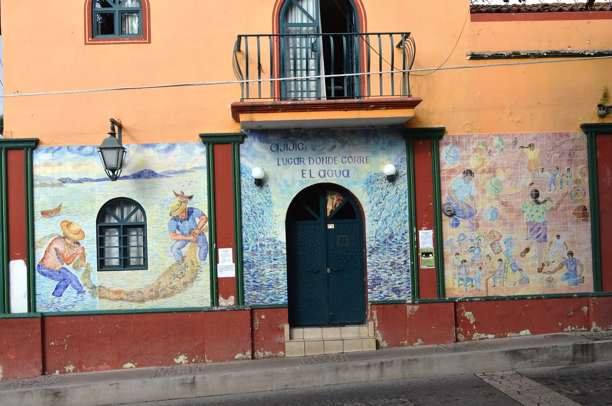
4. Tile murals of lake fishermen on the municipal building in AjijicAlt: An orange building with a balcony and painted tile panels of fishermen with nets and children playing, around a green arched doorAlejandroLinaresGarcia · CC BY-SA 4.0 · Commons · 1280×851
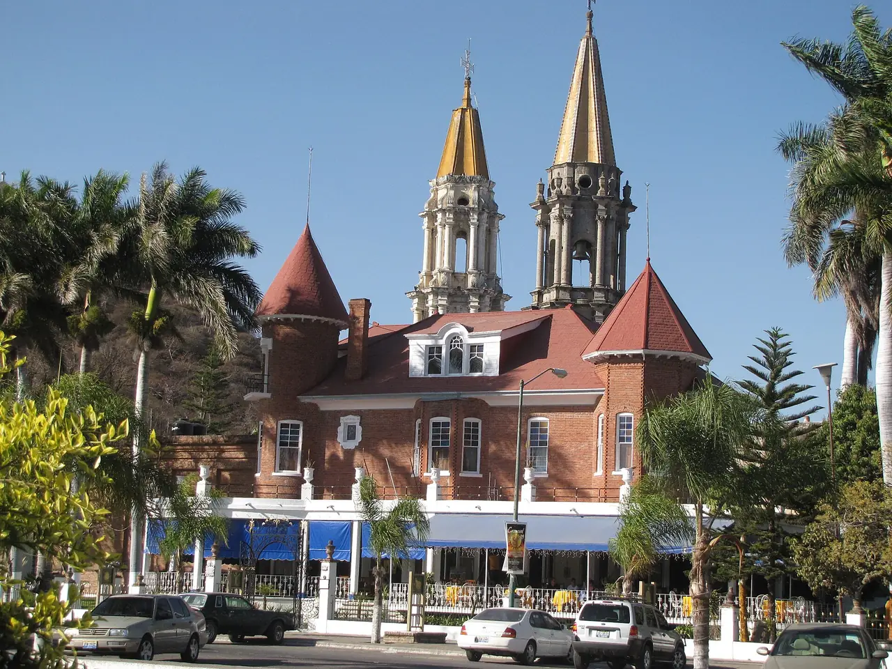
5. Twin church spires above a red-brick house at the main corner of Chapala's malecónAlt: Two tall stone church towers with golden spires behind a red-brick building with two turrets, palms and parked cars in frontCyberjack · CC BY 3.0 · Commons · 1280×960
Mérida merida
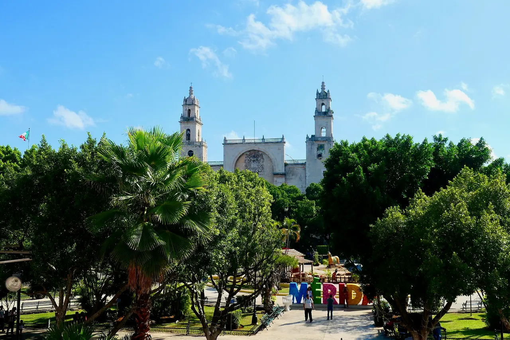
1. Mérida's cathedral rising above the trees of the Plaza GrandeAlt: A pale stone cathedral with two bell towers above lush trees and palms in a city square, with colourful Mérida letters and people below a blue skyBruno Rijsman · CC BY-SA 2.0 · Commons · 1280×853
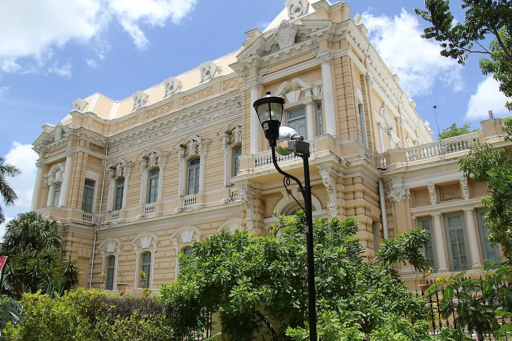
2. Palacio Cantón, a museum mansion in MéridaAlt: An ornate cream-coloured mansion with balustrades and carved window frames behind green trees and a black street lampGildardo Sánchez · CC BY 2.0 · Commons · 1280×853
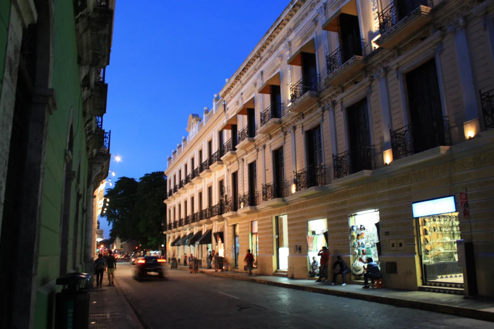
3. Balconied old buildings and shops on Calle 60 in central Mérida at duskAlt: A street at dusk lined by a long cream building with iron balconies and lit shop windows, people on the pavement and a passing carDavid Cabrera · CC BY-SA 2.0 · Commons · 1280×853
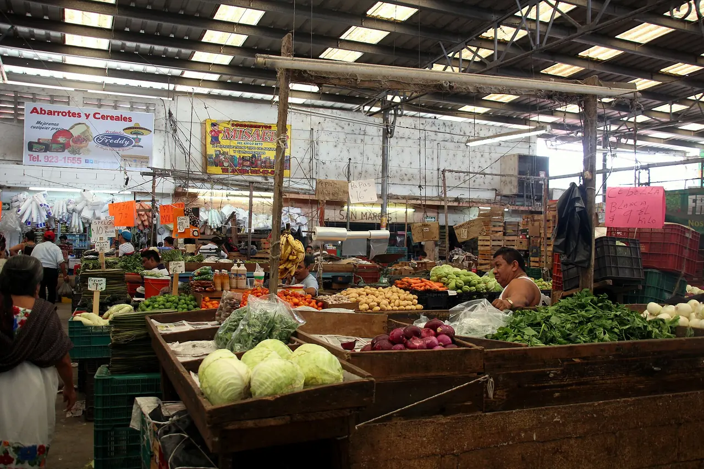
4. Produce stalls in Mérida's Mercado Lucas de GálvezAlt: Wooden market stalls piled with cabbages, onions, potatoes, limes and greens under a high metal roof, with vendors behindBex Walton · CC BY 2.0 · Commons · 1280×853
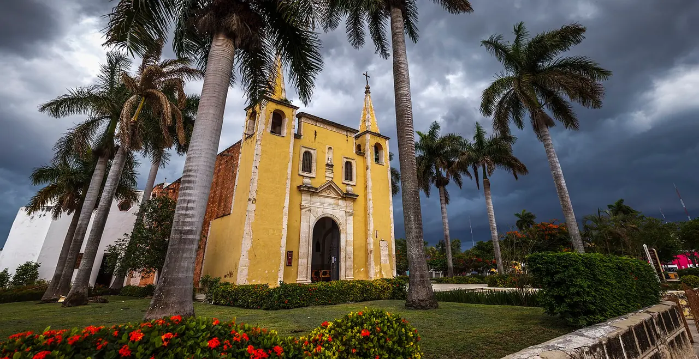
5. The yellow church of Santa Ana among royal palms in MéridaAlt: A yellow colonial church with two small bell towers, framed by tall palms and red flowers under a dark stormy skyMario Morales Rubí · CC BY-SA 4.0 · Commons · 1280×659
Puerto Vallarta puerto-vallarta
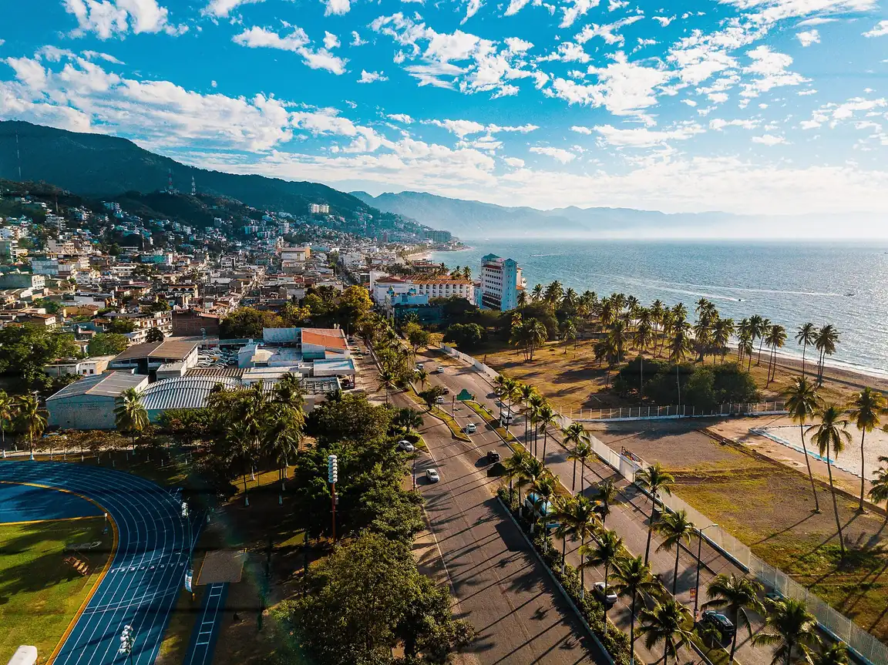
1. Puerto Vallarta between green hills and the Pacific shoreAlt: An aerial view of a palm-lined avenue running beside the sea, with a hillside town, mountains and a long bay under a blue sky with cloudsMiguel Naranjo · CC BY-SA 4.0 · Commons · 1152×863
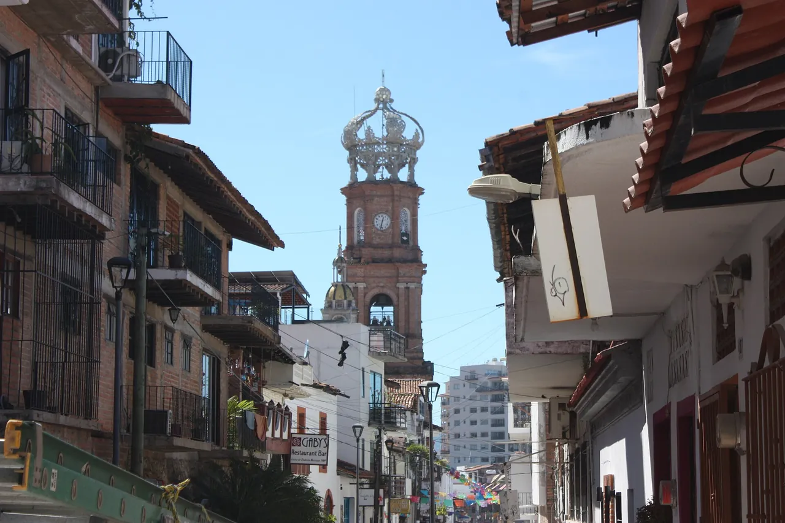
2. The crowned tower of Our Lady of Guadalupe church above a street in Puerto VallartaAlt: A narrow street with balconied buildings and tiled eaves, leading to a brick church tower topped by an openwork crownFeedmepaperr · CC BY-SA 4.0 · Commons · 1280×853
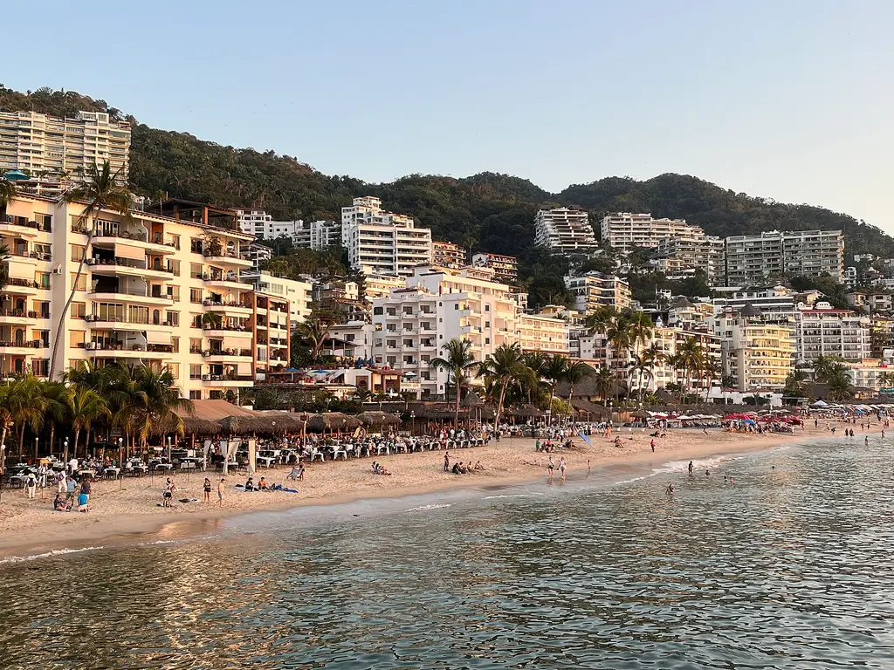
3. Beach restaurants below the hillside apartments of the Zona RománticaAlt: A sandy beach with thatched-umbrella restaurants and palms in front of white apartment blocks climbing a green hillAnother Believer · CC BY-SA 4.0 · Commons · 1024×768
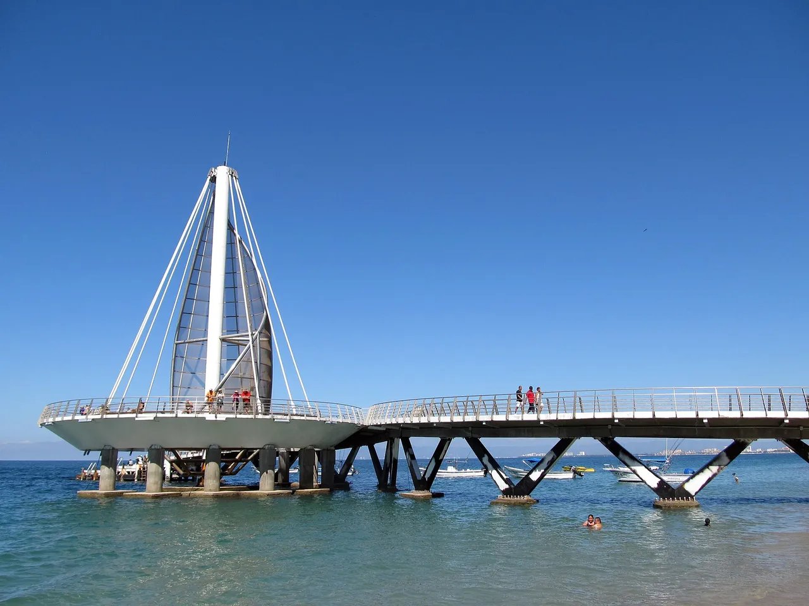
4. The sail-shaped Los Muertos pier reaching into the bayAlt: A white pier on angled legs ending in a round platform with a tall sail-like mast, over clear blue-green water under a blue skydaryl_mitchell · CC BY-SA 2.0 · Commons · 1280×960
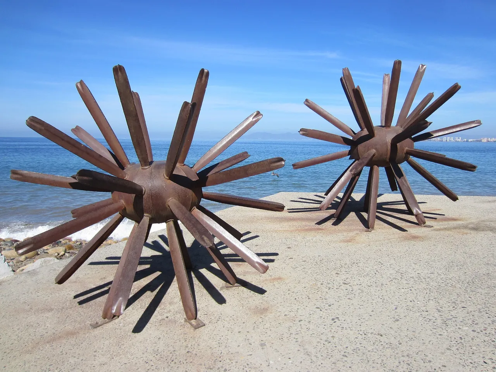
5. The sea-urchin sculptures Erizados on Puerto Vallarta's malecónAlt: Two large rusty-brown spiked metal sculptures on a concrete promenade beside the blue seaAnother Believer · CC BY-SA 3.0 · Commons · 1280×960
San Miguel de Allende san-miguel-de-allende
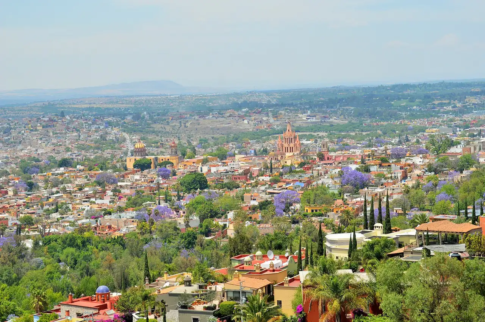
1. San Miguel de Allende's colonial centre and the Parroquia's pink spires, seen from a lookout south-west of townAlt: A wide view over a town of red and ochre houses, cypress trees and purple-flowering jacarandas, with a pink Gothic-style church spire and a yellow dome in the middleAlejandroLinaresGarcia · CC BY-SA 4.0 · Commons · 1280×851
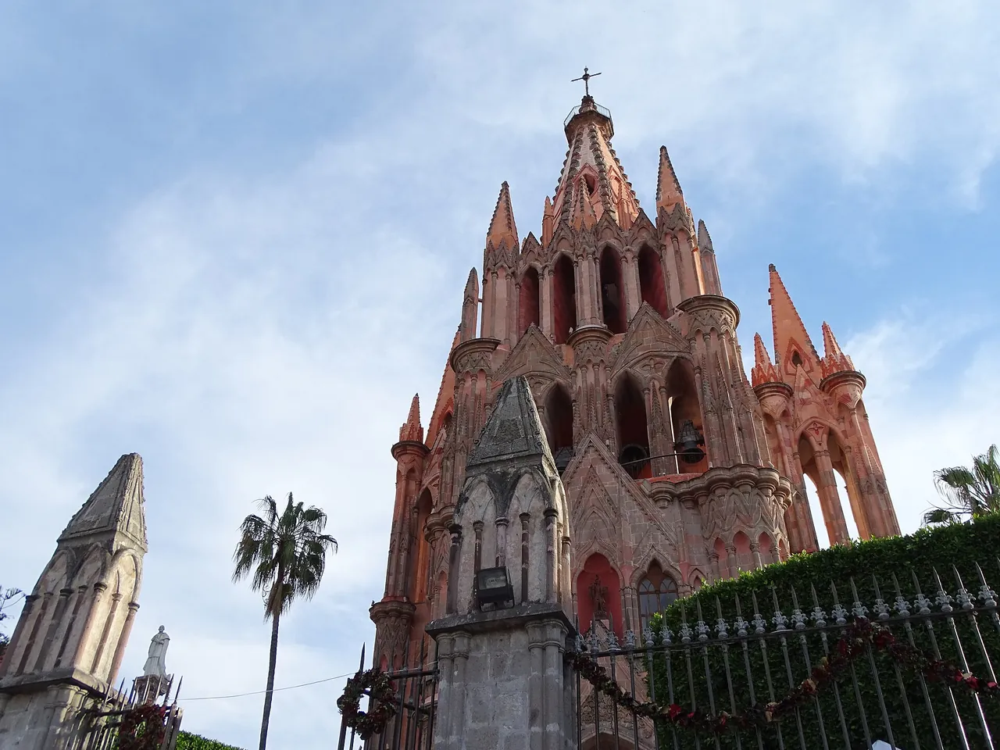
2. The pink stone spires of the Parroquia de San Miguel ArcángelAlt: A pink stone church tower with many pointed pinnacles above an iron fence and hedge, with a palm tree against a pale blue skyAdam Jones · CC BY-SA 2.0 · Commons · 1280×960
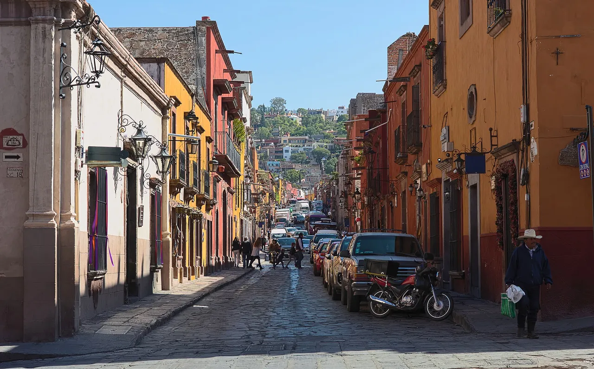
3. Ochre and red colonial houses with iron lanterns along Calle MesonesAlt: A cobbled street between ochre, red and white houses with wrought-iron lanterns, parked cars and a few pedestrians, rising toward green hillsCvmontuy · CC BY-SA 4.0 · Commons · 1280×797
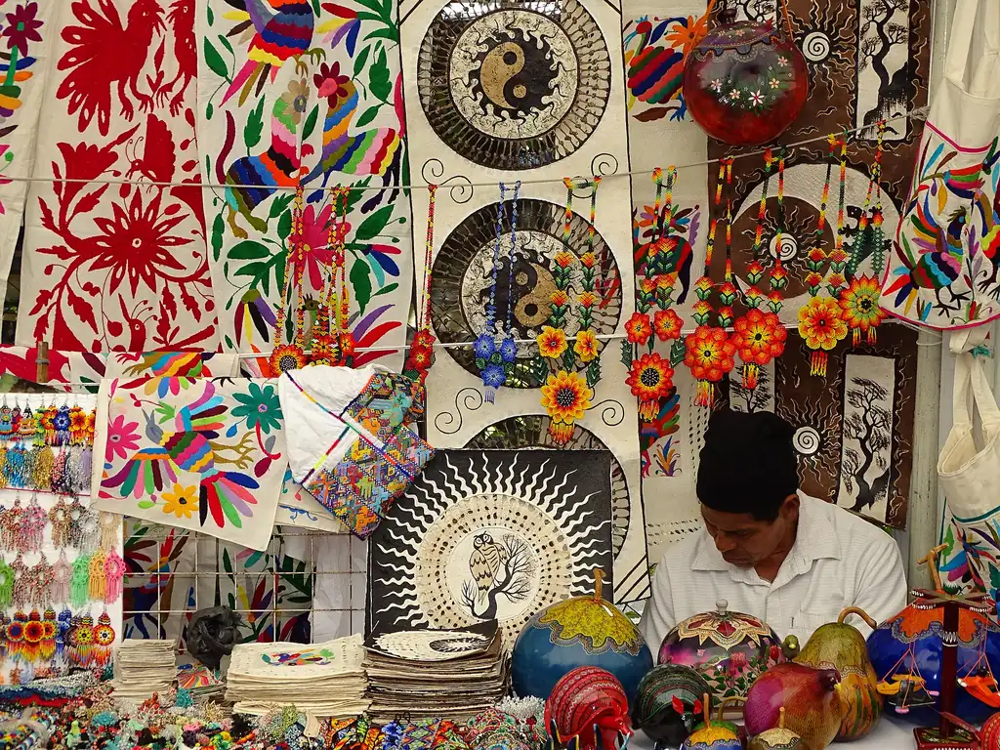
4. Embroidered textiles, beadwork and painted gourds at San Miguel's crafts marketAlt: A market stall hung with colourful embroidered cloths, beaded flower strings and printed wall hangings, with painted gourds in front and a vendor seated behindAdam Jones · CC BY-SA 2.0 · Commons · 1024×768
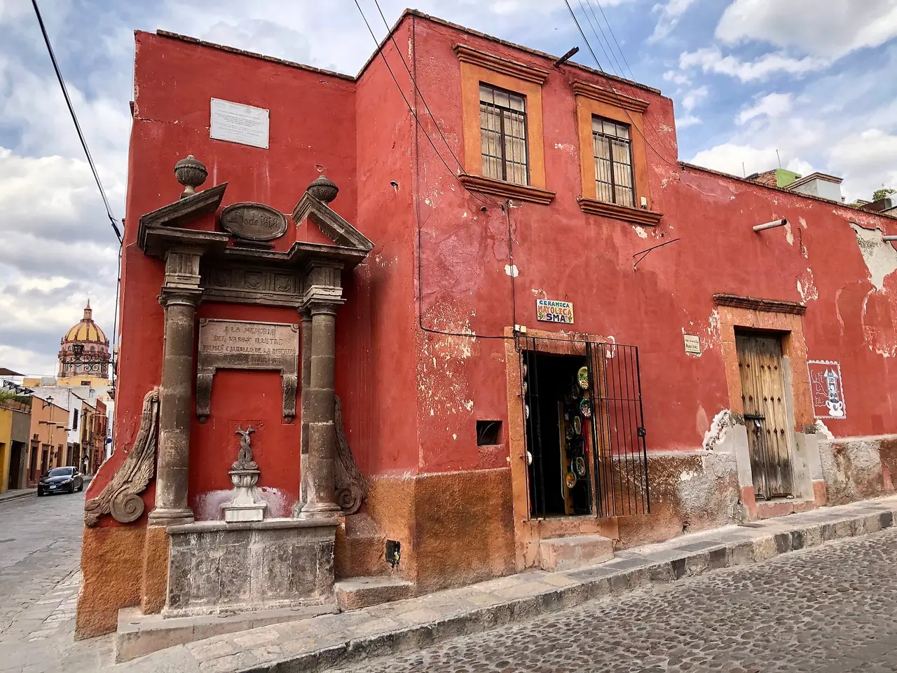
5. A red colonial house with a carved stone fountain on Calle ZacaterosAlt: A weathered red two-storey house on a cobbled corner, with a carved stone memorial fountain, a small ceramics shop and a church dome down the streetAdamina · CC BY 2.0 · Commons · 1280×960
La Paz (Baja California Sur) la-paz
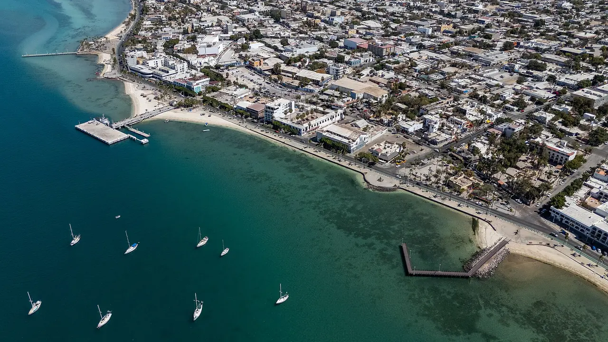
1. La Paz's malecón curving along the bay, with sailboats at anchor off the town centreAlt: An aerial view of a low white town along a curved sandy shore, with a pier, a long jetty and sailboats moored in green-blue waterProtoplasmaKid · CC BY-SA 4.0 · Commons · 1280×720
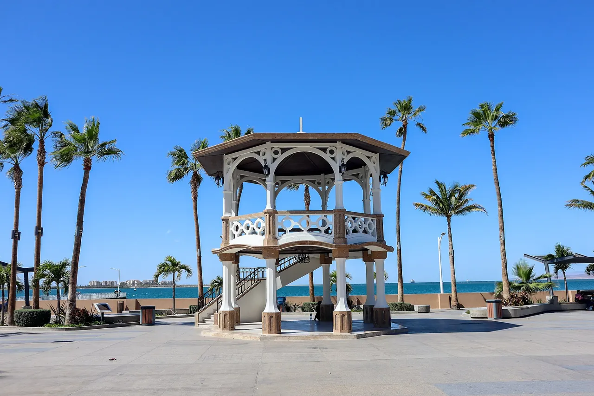
2. The bandstand on La Paz's palm-lined malecónAlt: A white two-level bandstand with a brown roof on a paved plaza, surrounded by tall palms with the blue bay behindProtoplasmaKid · CC BY-SA 4.0 · Commons · 1280×853
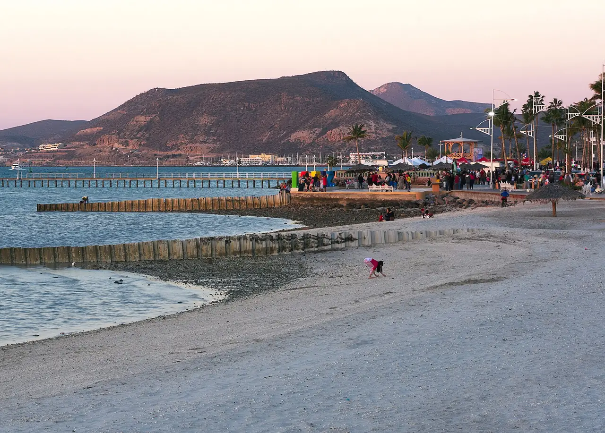
3. An evening stroll on the waterfront promenade in La PazAlt: A beach at dusk beside a busy promenade with palms, a gazebo and crowds, a pier and brown hills behind under a pink skyCvmontuy · CC BY-SA 4.0 · Commons · 1280×917
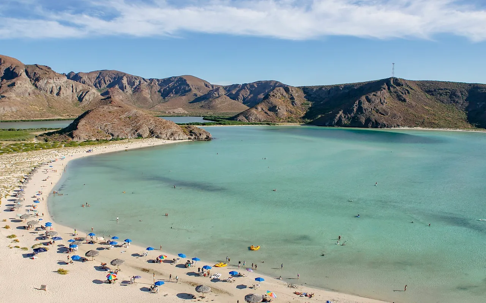
4. The shallow turquoise bay of Playa Balandra, a beach near La PazAlt: A curving white-sand beach with umbrellas around a shallow turquoise bay, enclosed by bare brown hills under a blue skyMatthew T Rader · CC BY-SA 4.0 · Commons · 1280×800
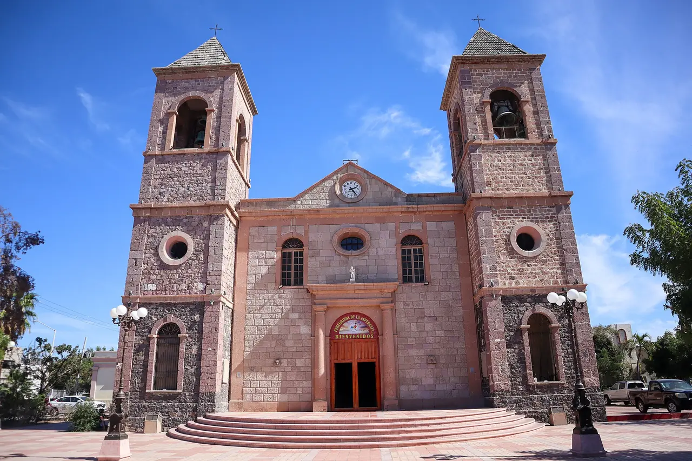
5. The stone cathedral of Nuestra Señora de La PazAlt: A pinkish stone church with two square bell towers, a clock and a red wooden door above wide curved steps, under a deep blue skyProtoplasmaKid · CC BY-SA 4.0 · Commons · 1280×853
Mexico City mexico-city
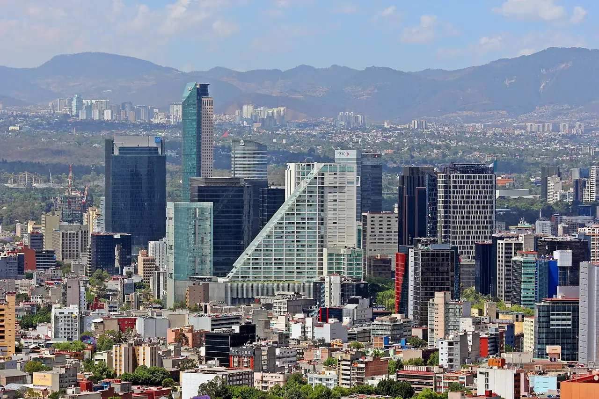
1. Towers along Paseo de la Reforma, with mountains on the horizonAlt: A dense city of low buildings rising to a cluster of glass towers, one with a stepped sloping face, with forested mountains on the horizonAlejandro Islas Photograph AC · CC BY 2.0 · Commons · 1280×853
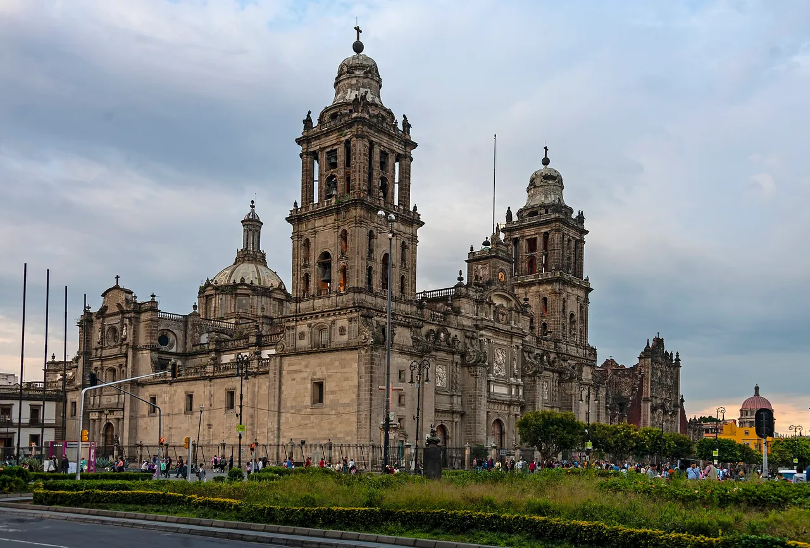
2. The Metropolitan Cathedral on the Zócalo, Mexico City's main squareAlt: A large grey stone cathedral with two bell towers and a dome behind a strip of garden, with people walking past under a cloudy skyDaniel Case · CC BY-SA 3.0 · Commons · 1280×867
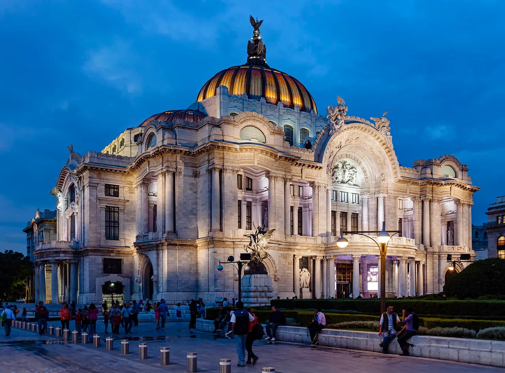
3. The Palacio de Bellas Artes lit up at dusk in the historic centreAlt: A white marble palace with an orange and gold dome, floodlit against a deep blue evening sky, with people on the plaza in frontDaniel Case · CC BY-SA 3.0 · Commons · 1280×948
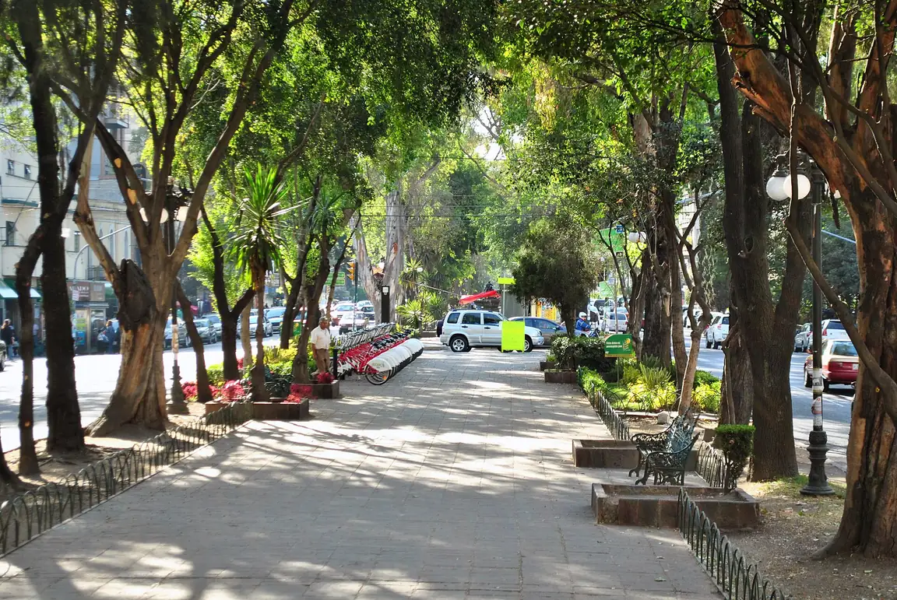
4. The tree-shaded walkway along Avenida Álvaro Obregón in Colonia RomaAlt: A wide paved median under tall trees with benches, flower beds and a row of red shared bicycles, between two lanes of trafficProtoplasmaKid · CC BY-SA 3.0 · Commons · 1152×771
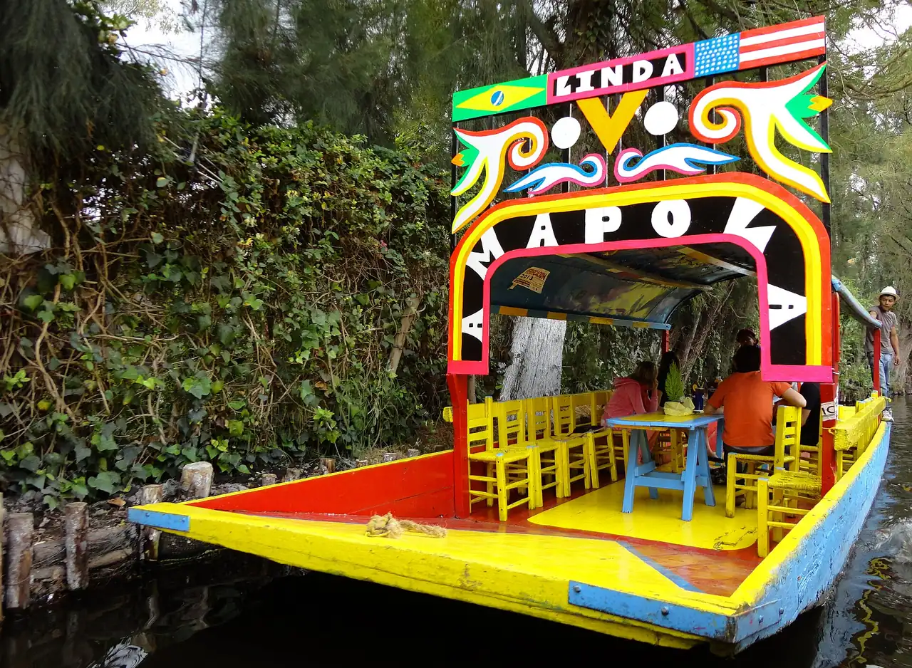
5. A painted trajinera boat on the canals of XochimilcoAlt: A flat boat painted yellow, red and blue with an arched sign, a table and yellow chairs, passing a leafy canal bankJuan Carlos Fonseca Mata · CC BY-SA 3.0 · Commons · 1280×938
Oaxaca oaxaca
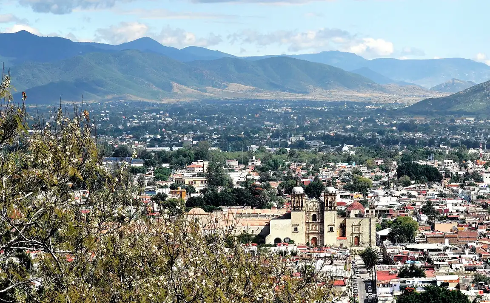
1. Oaxaca's colonial centre and the church of Santo Domingo in its highland valleyAlt: A view over a low city of pale houses and trees to a twin-towered stone church, with green mountain ranges behind under a partly cloudy skyLBM1948 · CC BY-SA 4.0 · Commons · 1152×713 · focus 65% 50%
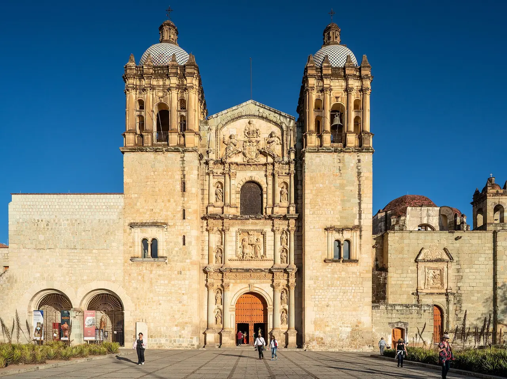
2. The carved stone front of the Templo de Santo Domingo de Guzmán in OaxacaAlt: A golden stone church facade with two bell towers topped by tiled domes and a carved central doorway, against a deep blue skynan palmero · CC BY 2.0 · Commons · 1280×958
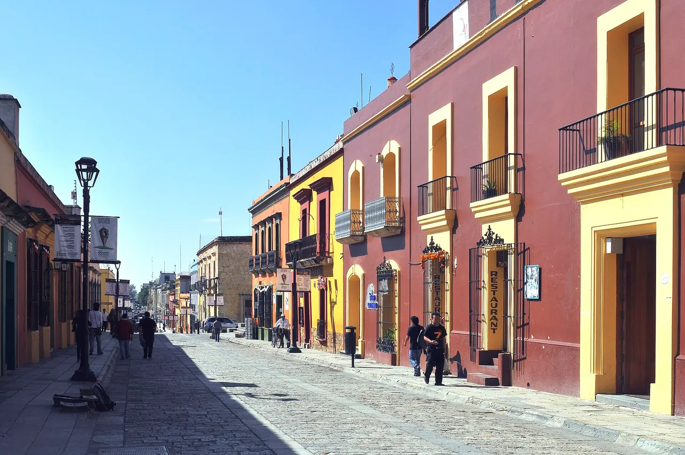
3. Colourful colonial houses along Calle Macedonio Alcalá in the historic centreAlt: A cobbled pedestrian street lined with red, yellow and orange houses with iron balconies and lamps, with a few people walkingLBM1948 · CC BY-SA 4.0 · Commons · 1280×850
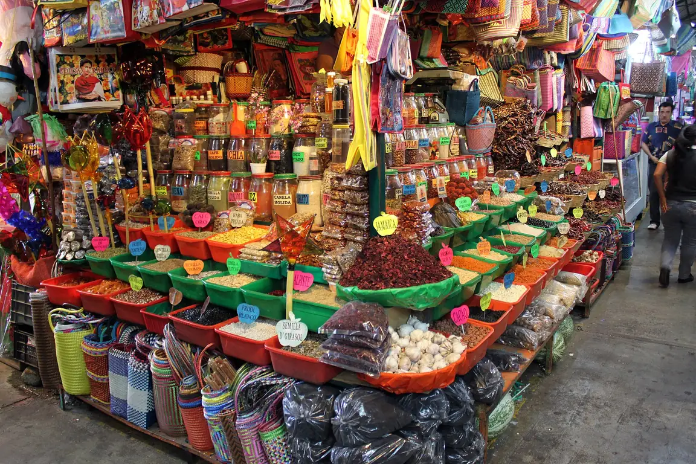
4. Spices, dried chiles and woven bags at Oaxaca's Benito Juárez marketAlt: A market stall with trays of seeds, beans and dried hibiscus, jars of spices, garlic, dried chiles and stacks of colourful woven bagsAnagoria · CC BY 3.0 · Commons · 1152×768
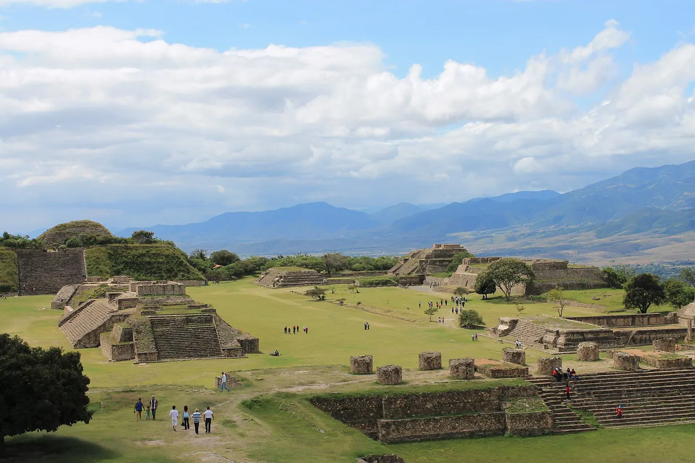
5. The Grand Plaza of Monte Albán, the archaeological site just outside Oaxaca, with the valley's mountains beyondAlt: A wide grassy plaza ringed by stepped stone platforms and ruins, with people walking, trees and blue mountain ranges under white cloudsDavidConFran · CC BY-SA 3.0 · Commons · 1280×853
Playa del Carmen playa-del-carmen
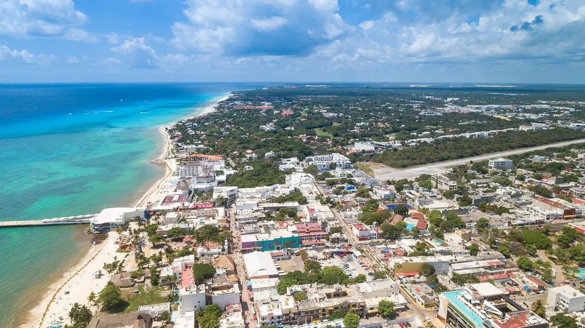
1. Playa del Carmen's low town and long white beach on the turquoise CaribbeanAlt: An aerial view of a low town of white buildings and green trees along a sandy shore, with a pier and bright turquoise sea under scattered cloudsdronepicr · CC BY 2.0 · Commons · 1280×719
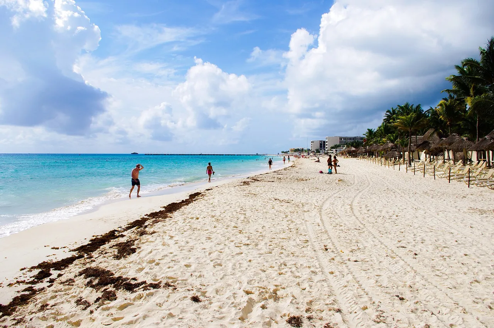
2. White sand and turquoise water at Mamita Beach in Playa del CarmenAlt: A wide white-sand beach with seaweed at the waterline, turquoise sea, a few distant walkers, and thatched umbrellas and palms on the right under big cloudsAlfonzo Buscemi · CC BY 3.0 · Commons · 1280×850
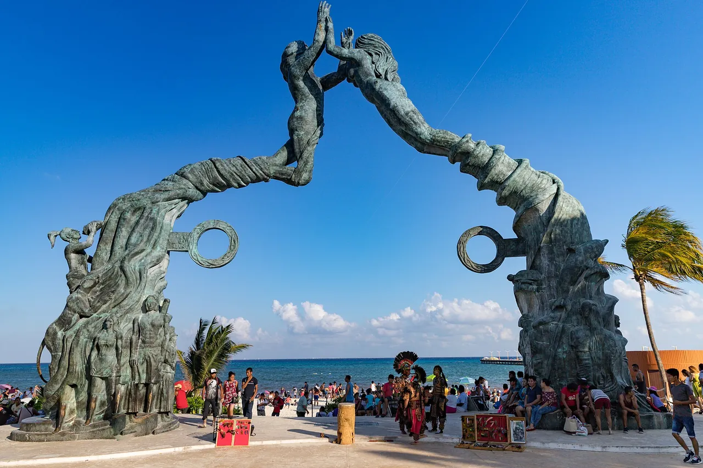
3. The Portal Maya sculpture in Parque Fundadores, by the seaAlt: A tall bronze arch of two reaching figures over a seafront plaza with people and a dancer in a feathered headdress, the blue sea behinddronepicr · CC BY 2.0 · Commons · 1280×853
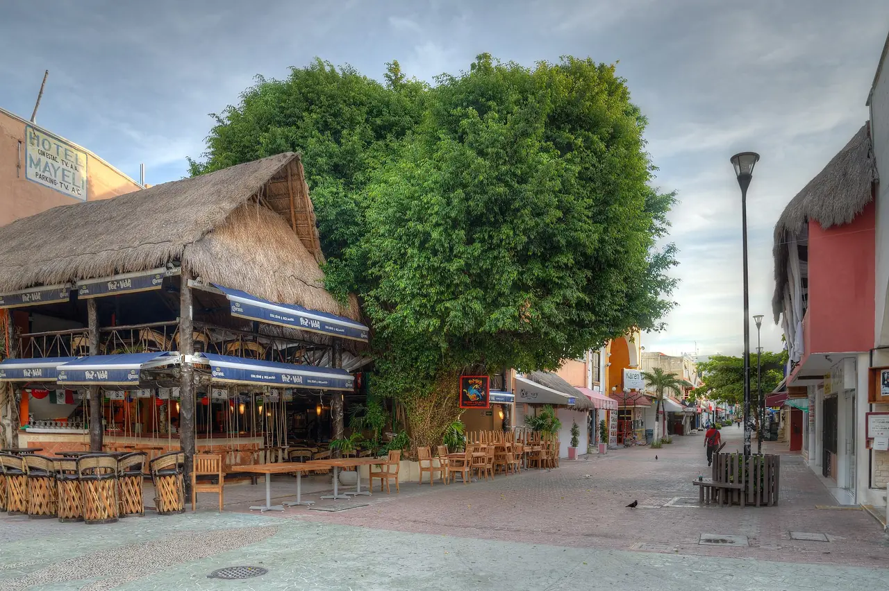
4. Restaurants under a palapa roof and a large tree on Quinta Avenida, Playa del Carmen's pedestrian streetAlt: A thatched-roof open restaurant with blue awnings and empty tables beside a large leafy tree on a quiet paved pedestrian streetGiorgio Galeotti · CC BY 4.0 · Commons · 1280×852
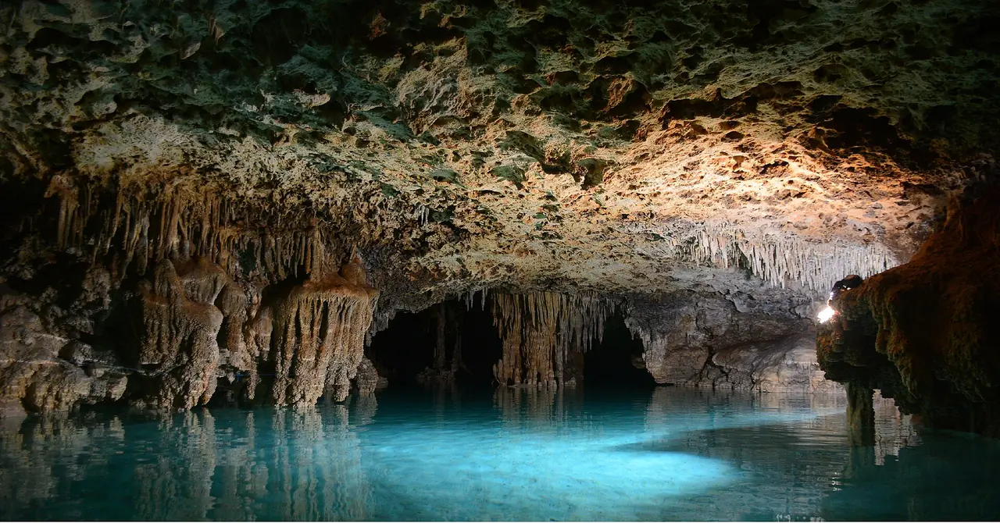
5. Río Secreto, an underground river cave in Quintana RooAlt: A lit limestone cave with hanging stalactites over still, bright blue waterRío Secreto · CC BY-SA 4.0 · Commons · 1280×670
Mazatlán mazatlan
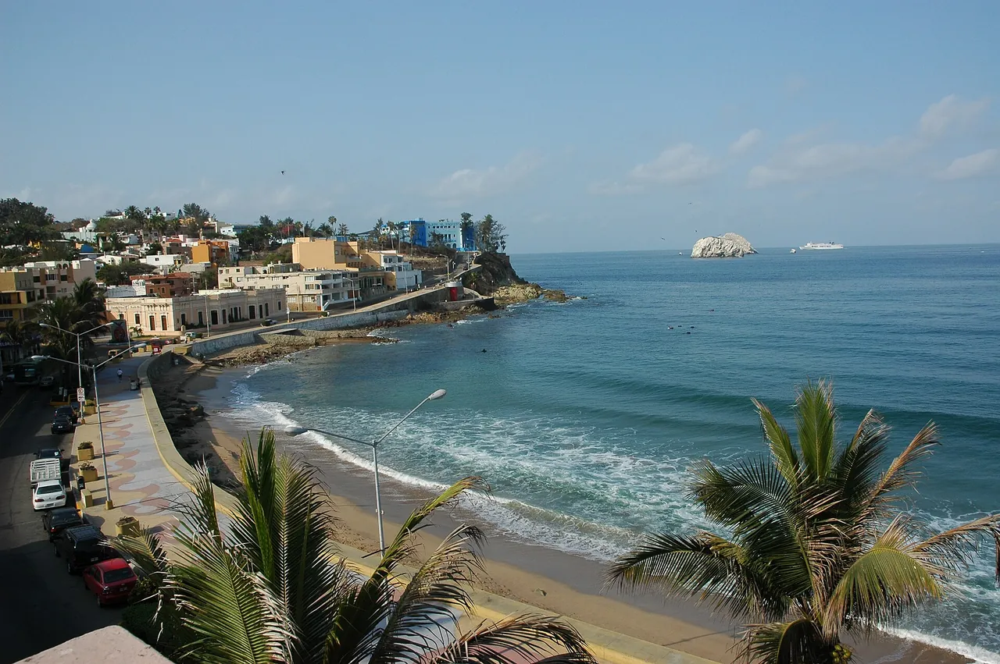
1. Mazatlán's seafront promenade curving along a sandy beach on the PacificAlt: A view from above palm fronds of a curving beach and promenade beside a road, with low houses on a rocky point and a white rock islet offshoreWonderlane · CC0 · Commons · 1280×851
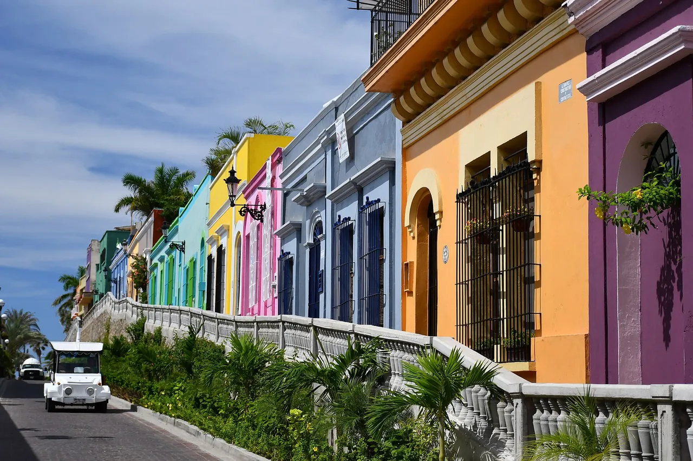
2. Brightly painted old houses with iron-grilled windows on Calle Ángel Flores in Mazatlán's old townAlt: A row of purple, orange, grey, pink, yellow and green colonial houses with barred windows above a balustrade and palms, and a white open-air taxi on the streetGzzz · CC BY-SA 4.0 · Commons · 1280×853
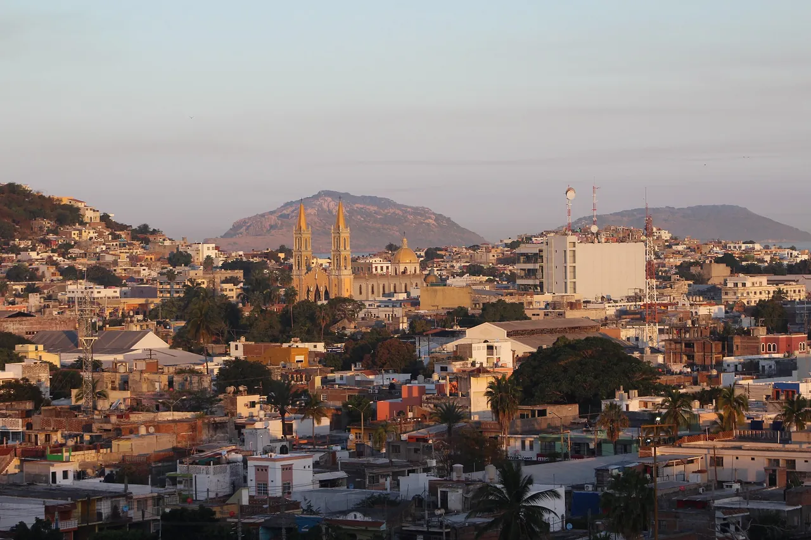
3. The twin spires of the cathedral above Mazatlán's old town, with rocky hills beyondAlt: Low pastel houses and palms at golden hour around a cathedral with two yellow spires and a dome, with rocky hills and radio masts behindShane Smith · CC BY-SA 3.0 · Commons · 1280×853
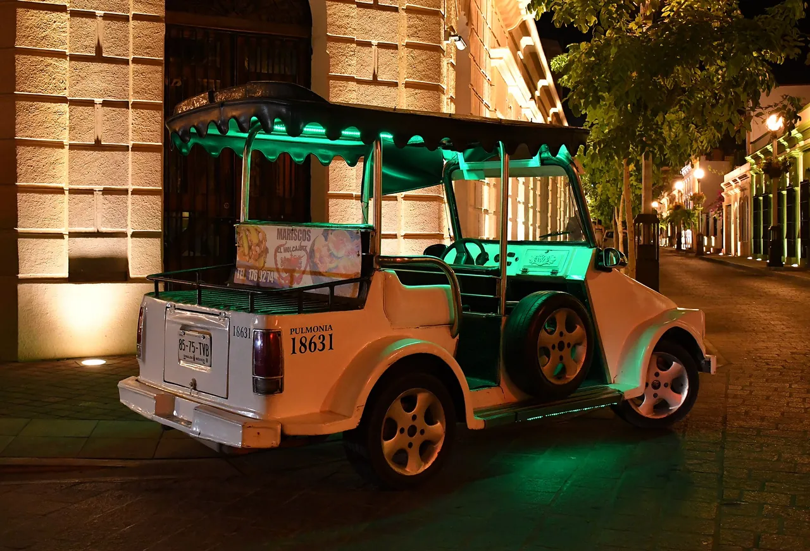
4. A pulmonía, Mazatlán's open-air taxi, on a cobbled street at nightAlt: A white open-sided taxi with a scalloped black canopy and green underglow, parked on a lit cobbled street beside a stone buildingGzzz · CC BY-SA 4.0 · Commons · 1280×872
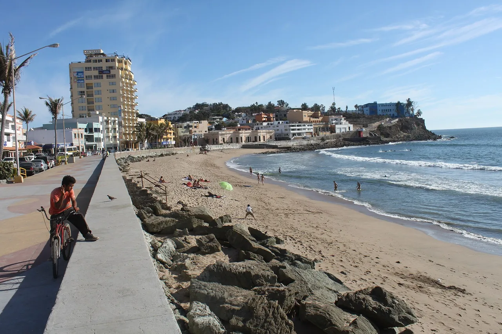
5. The beach and seawall promenade at Olas Altas in MazatlánAlt: A curving sandy beach with rocks below a seawall promenade, a man on a bicycle at lower left, a few swimmers in the surf, and hotels and houses along a rocky point under a blue skyEli Duke · CC BY-SA 2.0 · Commons · 1280×853
Antigua Guatemala antigua-guatemala
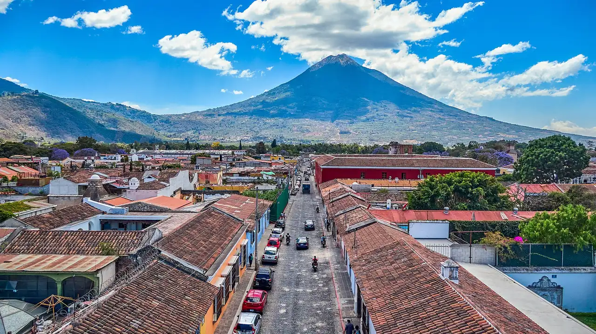
1. Antigua's tiled roofs and cobbled streets below Volcán de AguaAlt: An aerial view down a cobbled street lined with low tiled-roof houses, with a large green volcano under a blue sky behindJuan Francisco · CC BY-SA 2.0 · Commons · 1280×719
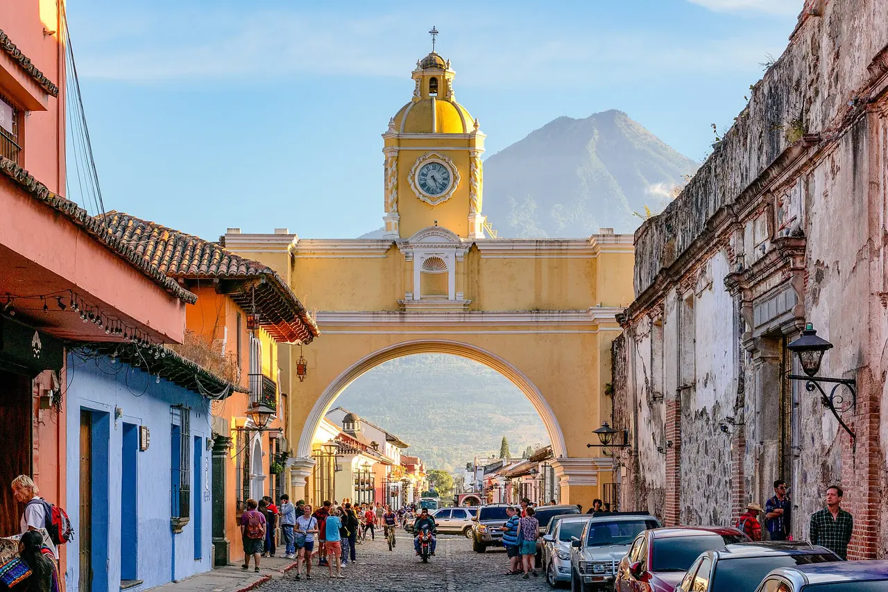
2. The Santa Catalina Arch on 5th Avenue North, one of Antigua's colonial landmarksAlt: A yellow arch with a clock tower spanning a cobbled street of colourful houses, with a volcano behindChad Davis · CC BY-SA 2.0 · Commons · 1280×854
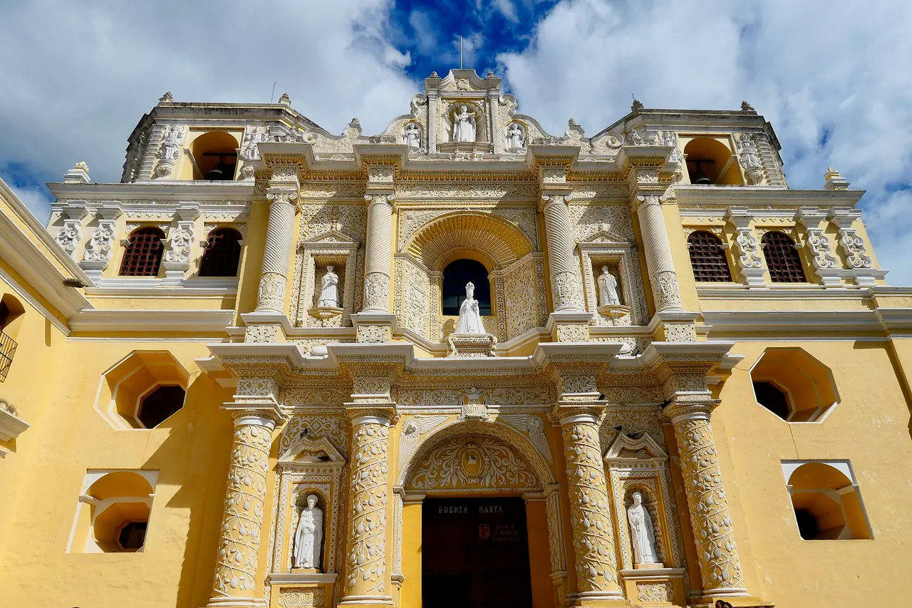
3. The carved yellow-and-white façade of La Merced church in AntiguaAlt: A yellow church front covered in white stucco ornament, columns and statues, under a blue sky with cloudsBruno Rijsman · CC BY-SA 2.0 · Commons · 1280×853
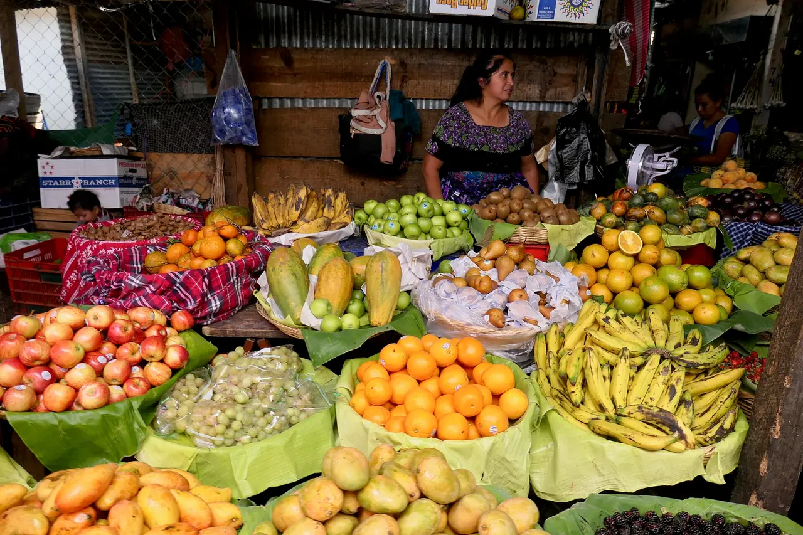
4. Fruit stalls in Antigua's marketAlt: Heaps of oranges, bananas, apples, mangoes and papayas on green-lined baskets, with a vendor behind themBruno Rijsman · CC BY-SA 2.0 · Commons · 1280×853
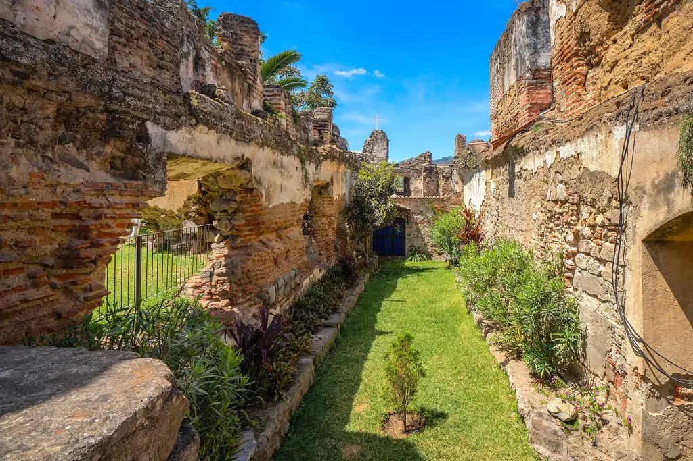
5. A garden among the colonial ruins at San Francisco el Grande in AntiguaAlt: A strip of lawn and plants between crumbling brick and stone walls, leading to a blue door under a blue skyChad Davis · CC BY 2.0 · Commons · 1024×683
Lake Atitlán (Panajachel) panajachel
1. Panajachel on its point of Lake Atitlán, seen from the overlook on Highway 1Alt: A wide blue lake between green mountains, with a small town on a wooded point along the left shore under a blue skyAxcordion · CC BY-SA 3.0 · Commons · 1280×847 · focus 25% 50%2. Lake boats moored at the jetties in PanajachelAlt: Rows of colourful passenger launches and wooden jetties on a lake in warm evening light, with trees on the shore at leftlamblukas · CC BY 4.0 · Commons · 1024×5763. The stone façade of Panajachel's church by the central parkAlt: A broad pale stone church front with bells, niches and statues, between two palms, with a green hill behindSimon Burchell · CC BY-SA 4.0 · Commons · 1280×9604. Stalls of textiles and vegetables in Panajachel's marketAlt: A cobbled street under dark awnings lined with stalls of woven cloth and vegetables, with shoppers and vendorsJocelyn Saurini · CC BY 2.0 · Commons · 1280×9605. A boatman paddling out from the shore at Panajachel, with the volcanoes across Lake AtitlánAlt: A man in a small wooden boat on clear, rippled shallows with old posts at left, and two volcanoes across the lake under a pale skyFrancisco Anzola · CC BY 2.0 · Commons · 1280×960
San José san-jose-cr
1. San José spread across the Central Valley below the mountainsAlt: An aerial view of a large city filling a valley floor, with forested mountain ridges and scattered clouds behindMariordo (Mario Roberto Durán Ortiz) · CC BY-SA 4.0 · Commons · 1152×6312. The National Theatre on its plaza in downtown San JoséAlt: A stone neoclassical theatre with statues on the roof and a Costa Rican flag, with people walking across the plaza in frontMariordo ((Mario Roberto Durán Ortiz) · CC BY-SA 4.0 · Commons · 1280×8533. Casa Verde, a wooden house from the coffee boom in San José's Barrio AmónAlt: A green wooden house with a red roof, white railings and a veranda on a sloping street corner, next to a pink houseRodtico21 · CC BY-SA 4.0 · Commons · 1280×6054. The Plaza de la Democracia and the yellow National Museum in downtown San JoséAlt: Terraced steps and trees of a large plaza below a long yellow fortress-like building and a glass dome, with mountains and clouds behindMariordo (Mario Roberto Durán Ortiz) · CC BY-SA 4.0 · Commons · 1152×7685. The church of San Miguel Arcángel in Escazú, a suburb with a long-established expat communityAlt: A cream-coloured church with arcades, a domed bell tower and statues, behind an iron fence, with palm trees and a cloudy skyRodtico21 · CC BY-SA 4.0 · Commons · 1037×740
Atenas atenas
1. Atenas from the air, a small town among green hills in Costa Rica's Central ValleyAlt: An aerial view of a small town of low red-roofed houses surrounded by fields, woods and green hillsMariordo (Mario Roberto Durán Ortiz) · CC BY-SA 4.0 · Commons · 1280×8532. The church and its gardens in downtown AtenasAlt: A white church with a pointed bell tower and red roof behind lawns, palms and shade treesHaakon S. Krohn · CC BY 4.0 · Commons · 1152×7603. The valley around Atenas seen from the Vista Atenas lookoutAlt: A wide view over wooded hills and scattered houses to distant mountains under white clouds and a blue skyHaakon S. Krohn · CC BY 4.0 · Commons · 1280×7204. A shaded path under flowering trees and palms in Atenas's parkAlt: A paved path through a park lined with tall palms, benches and a tree covered in yellow blossomRodtico21 · CC BY-SA 4.0 · Commons · 675×8965. The green at the centre of Barrio Jesús in Atenas, below a wooded hillAlt: A wide grassy football field with two children, a small church tower and houses among trees, and a forested hill under a blue skyHaakon S. Krohn · CC BY 4.0 · Commons · 1280×906
Cayo (San Ignacio) cayo
1. The Hawkesworth suspension bridge over the Macal River at San IgnacioAlt: A long suspension bridge with an orange tower crossing a green river between wooded banks, with houses on a hill behindKaldari · CC0 · Commons · 1280×9602. El Castillo, the main pyramid at the Maya site of Xunantunich near San IgnacioAlt: A tall stepped stone pyramid with a wide stairway above a sunlit lawn where a small group of visitors stands, under white cloudscjuneau · CC BY 2.0 · Commons · 1280×853 · focus 70% 50%3. The Macal River seen from the Hawkesworth Bridge in San IgnacioAlt: A wide calm brown river between banks of large shade trees under a blue sky with small white cloudsKaldari · CC0 · Commons · 1280×8534. San Ignacio's houses among trees, with farmland and forested hills beyondAlt: A view over low houses with coloured roofs among palms and trees, fields and a long wooded ridge behind under a grey skyLaslovarga · CC BY-SA 3.0 · Commons · 1280×9605. Big Rock Falls in the Mountain Pine Ridge reserve, in the Cayo DistrictAlt: A waterfall pouring through a rocky gorge between green slopes and pine trees, into pools among bouldersRussell Harrison Photography · CC BY-SA 2.0 · Commons · 896×672
Hopkins hopkins
1. Almond Beach at Hopkins, on the Caribbean shore of Stann CreekAlt: A pale sand beach curving along turquoise sea under a blue sky with small clouds, with a palm tree and sea-grape bushes at rightWalter Rodriguez · CC BY 2.0 · Commons · 1280×8532. Houses and a traditional Garifuna thatched building around a yard in HopkinsAlt: A grassy yard with young palms in front of a pale blue house, a two-storey wooden house with laundry hanging, and a round thatched building, under a blue skyPitxiquin · CC BY-SA 4.0 · Commons · 1152×8643. Painted wooden houses on stilts along a sand street in HopkinsAlt: A turquoise wooden house and a pink house with a turquoise porch, both raised on posts, behind a sandy street with a parked motorbikePitxiquin · CC BY-SA 4.0 · Commons · 1280×9604. A sand road through mango and palm trees down to the sea in HopkinsAlt: A sandy dirt road between leafy mango trees and palms, opening onto a glimpse of the sea under a blue skyPitxiquin · CC BY-SA 4.0 · Commons · 1152×8645. Rainforest of the Cockscomb Basin Wildlife Sanctuary, inland from Hopkins in Stann CreekAlt: A wide view over unbroken green forest to a line of hazy mountains with one pointed peak, under a blue skyCephas · CC BY-SA 4.0 · Commons · 1280×853
Corozal corozal
1. Houses and a sea wall along the bay front in CorozalAlt: Low houses and palms lining the shore of a pale green bay, with a sea wall running into the distance under a blue sky with cloudsOndřej Žváček · CC BY 2.5 · Commons · 1280×767 · focus 15% 50%2. The fountain and clock tower in Corozal's town squareAlt: A tiled square with a turquoise fountain, a turquoise clock tower, shade trees and a tall palm under a blue skyBabs Umenhofer · CC BY 3.0 · Commons · 1280×8483. A palm on a grassy jetty on the south Corozal shore, with a storm building out over the bayAlt: A single palm on a stone-edged grassy jetty over small waves, with tall white clouds over the water and a tree at rightATS · CC BY-SA 4.0 · Commons · 1280×9604. Carved masks on a temple at the Maya site of Cerros, on Corozal BayAlt: A low stone temple platform with large carved faces either side of a stairway, a tree in front and turquoise sea behindBabs Umenhofer · CC BY 3.0 · Commons · 1280×8485. The green Corozal Town Hall, decorated for ChristmasAlt: A two-storey mint-green town hall with salmon-pink pillars and a glass door, with painted Christmas decorations on the low wall in frontBabs Umenhofer · CC BY 3.0 · Commons · 1280×848
Placencia placencia
1. A wooden pier over clear water to a palm-fringed shore in PlacenciaAlt: A wooden pier running across clear green water to a white beach with palms, a thatched hut and a house with a turquoise roofDave ten Broek · CC BY 2.0 · Commons · 1280×8532. Maya Beach, north of Placencia village on the peninsulaAlt: A long curve of sand beach with small waves, palms and scattered houses along the shore and mountains far behindNagyman · CC BY-SA 2.0 · Commons · 1280×9603. The Placencia peninsula from the air, a low strip of land between lagoon and seaAlt: An aerial view of a narrow strip of land with a road, houses, jetties and a canal estate, between two wide stretches of waterLaslovarga · CC BY-SA 3.0 · Commons · 1280×9604. Palm-thatched shades and wooden chairs on the beach in PlacenciaAlt: Two palm-thatched umbrellas over wooden tables and orange chairs on white sand, with palms and calm blue sea behindLaslovarga · CC BY-SA 3.0 · Commons · 1280×9605. A boat crossing the still Placencia Lagoon, on the ferry route to IndependenceAlt: A small green motorboat on a mirror-calm lagoon reflecting white clouds, with a low line of mangroves behindJan Pešula · CC0 · Commons · 1280×960
Ambergris Caye (San Pedro) ambergris-caye
1. Ambergris Caye from the air, between its lagoon and the barrier reefAlt: An aerial view of a long narrow island with houses, palms and jetties, a green lagoon on the left and turquoise sea with a line of surf on the rightAsteiner · CC BY-SA 3.0 · Commons · 1280×9602. Piers and boats along the beach in San Pedro, the island's only townAlt: Looking down on long wooden piers with moored boats and small red- and blue-roofed buildings over turquoise water, with palms along the beachAsteiner · CC BY-SA 3.0 · Commons · 1280×9603. A paved street in San Pedro, the island's only townAlt: A street of hexagonal paving stones between painted houses and palms, with parked golf carts and an SUV and a man carrying red cratesPgbk87 · CC BY-SA 3.0 · Commons · 1280×9604. Boats on the turquoise water inside the barrier reef off Ambergris CayeAlt: Turquoise shallow water with a moored motorboat, a boat towing a striped parasail, and a white line of surf on the reef behindElizabeth Albert · CC BY 2.0 · Commons · 1280×8575. Mangroves at Boca Chica on the south side of Ambergris CayeAlt: Mangrove trees with tangled roots standing in clear shallow water, with calm sea under a hazy skyAnatmavada · CC BY-SA 3.0 · Commons · 1280×960
Roatán roatan
1. West End from the air, with its bays and green hills on the west tip of RoatánAlt: An aerial view of a forested coast with houses, piers and boats along a beach, small headlands and bays, and deep blue seaNosferattus · CC0 · Commons · 1024×7682. The main street of West End, where much of Roatán's long-settled English-speaking community livesAlt: A wet paved street lined with wooden buildings, shops and gardens under tall trees, with a palm frond at rightPrayitno / Thank you for (12 millions +) view · CC BY 2.0 · Commons · 1152×7683. West Bay's palm-lined beach seen from a pierAlt: Clear green water with a line of buoys, a long white beach backed by palms and buildings, and a wooden pier corner in frontdanieln492 · CC BY 2.0 · Commons · 1280×8534. The reef running parallel to Roatán's west coast, looking north towards West EndAlt: An aerial view of turquoise shallows and a reef edge beside deep blue water, with a forested coastline and beach at rightPi3.124 · CC BY-SA 4.0 · Commons · 1280×7205. Painted stilt houses along the water at Oak Ridge on RoatánAlt: Colourful wooden houses on stilts with red, green and orange roofs lining a calm channel, with the sea behindPrayitno / Thank you for (12 millions +) view · CC BY 2.0 · Commons · 1280×765
Las Terrenas las-terrenas
1. The palm-lined beach at Las Terrenas on the Samaná peninsulaAlt: A curving sand beach shaded by leaning coconut palms beside clear turquoise water, with a palm-covered point in the distanceCaptain-tucker · CC BY-SA 3.0 · Commons · 1280×9602. Beachfront restaurants at the Pueblo de los Pescadores, rebuilt after a fire in 2012Alt: A row of low wooden restaurant buildings with tin roofs set back from a sandy beach under tall leaning palmsDanSy · CC BY-SA 3.0 · Commons · 1280×9603. A painted two-storey building with fretwork balconies on Calle 27 de Febrero in Las TerrenasAlt: An orange and blue two-storey building with carved yellow balcony railings, arched shopfronts and palms, by a zebra crossing with a parked scooterwuppertaler · CC BY 4.0 · Commons · 1280×9614. A boat pulled up on the sand at Playa Las Ballenas in Las TerrenasAlt: An orange and white wooden boat with a canopy frame drawn up on a sandy beach, with more boats moored offshore under a cloudy skywuppertaler · CC BY 4.0 · Commons · 1280×9615. White sand between rocky outcrops at Playa Bonita in Las TerrenasAlt: A wide white sand beach between a dark rock outcrop and a tree-covered rocky point, with calm blue sea under a clear skywuppertaler · CC BY 4.0 · Commons · 1280×960
Montevideo montevideo
1. Montevideo's city centre and the Rambla Gran Bretaña along the Río de la PlataAlt: An evening view over a waterfront road, brick apartment blocks and a city skyline with a tall ornate tower on the right, beside calm waterSala de Medios - Intendencia de Montevideo · CC BY-SA 4.0 · Commons · 1280×8532. Palacio Salvo over Plaza Independencia, Montevideo's main squareAlt: A tall ornate stone tower lit by low sun behind a paved square with palm trees, under a clear blue skyFalk2 · CC BY-SA 3.0 de · Commons · 1280×9273. Palms, benches and a city beach along the Rambla, Montevideo's long waterfront promenadeAlt: A seafront promenade with tall palm trees and benches, a sandy beach and a line of white apartment blocks across a bayMike Dickison · CC BY 4.0 · Commons · 1280×8254. Book stalls at the Feria de Tristán Narvaja, a street market in MontevideoAlt: Tables piled with books along a tree-lined street, with shoppers browsing and market awnings behindRodrigo Olivera · CC BY 2.0 · Commons · 1280×8515. The columned front of Teatro Solís in Montevideo's old townAlt: A pale neoclassical theatre front with eight columns, a pediment with a sun relief and hanging show bannersReinhold Möller · CC BY-SA 4.0 · Commons · 1280×960
Santiago santiago
1. Snow on the Andes above Santiago's apartment blocks on a clear winter dayAlt: A wide view over city towers and apartment blocks with a long snow-covered mountain range behind under a clear blue skyvictor san martin · CC BY-SA 2.0 · Commons · 1024×773 · focus 50% 60%2. The Metropolitan Cathedral on the Plaza de Armas, Santiago's historic main squareAlt: A pale stone cathedral with two bell towers and a dome beside a paved square, a street with yellow taxis and a glass office towerCARLOS TEIXIDOR CADENAS · CC BY-SA 4.0 · Commons · 1280×9603. The Neptune Fountain terrace on Cerro Santa Lucía, a hilltop park in central SantiagoAlt: A curved ochre arcade with columns and a fountain, framed by willow branches, with a domed pavilion and palm trees aboveRjcastillo · CC BY-SA 4.0 · Commons · 1024×6834. Lunch tables under the iron roof of the Mercado Central, Santiago's central market hallAlt: A busy market hall with an ornate iron roof, flags and restaurant tables full of dinersAlmonroth · CC BY-SA 3.0 · Commons · 1280×8535. Ponds and lawns of Parque Bicentenario in Vitacura, with the towers of the business district behindAlt: A clear pond with water plants and a boardwalk, green lawns and trees, and glass skyscrapers under a blue skyCarlos Figueroa Rojas · CC BY-SA 4.0 · Commons · 1280×853
Asunción asuncion
1. Leafy streets and apartment towers of Asunción, seen from the Herrera neighbourhoodAlt: An aerial view over tree-filled residential streets with red-tiled roofs, a white apartment block in front and a row of high-rise towers behindOverkill53 · CC0 · Commons · 1280×604 · focus 35% 50%2. The Palacio de los López, the presidential palace in Asunción's historic centreAlt: A long white palace with arched galleries, a central tower and palm trees on the lawn in front, with a Paraguayan flag on the office block behindFF MM · CC BY-SA 4.0 · Commons · 1280×8533. The Avenida Costanera along the bay of the Paraguay River in AsunciónAlt: An aerial view of a divided riverside avenue with lawns and palms, the city centre and office blocks on the left and a wide river on the right under a blue skyOverkill53 · CC BY-SA 4.0 · Commons · 1280×7454. Fruit and vegetable stalls in Asunción's Mercado de AbastoAlt: A covered market aisle lined with crates of cabbages, carrots, onions and other produce behind green wire meshChipachyryry · CC0 · Commons · 1280×9455. The National Pantheon of the Heroes and its flags in Asunción's historic centreAlt: A stone portico with tall columns and a guard at the door, beside a row of flags on tall poles under a blue skyGarcia.dennis · CC BY-SA 4.0 · Commons · 1280×960
Lima lima
1. The Pacific shore below the clifftop district of Barranco, in LimaAlt: A curving coastline with blue sea and breaking waves, a coast road and beach at the foot of sandy cliffs topped by apartment buildingsAvodrocc · CC BY 2.0 · Commons · 1280×8482. The bronze fountain and yellow colonial buildings of Lima's Plaza MayorAlt: A tall dark bronze fountain on a paved square, with palm trees and yellow buildings with carved wooden balconies behindPA · CC BY-SA 4.0 · Commons · 1280×8243. Apartment towers on the green clifftops of Miraflores, above the coast roadAlt: Tall white apartment blocks along the top of a steep sandy cliff, with a shopping terrace built into the cliff and a road belowAvodrocc · CC BY 2.0 · Commons · 1280×8484. Ceviche at Canta Rana, a restaurant in BarrancoAlt: A plate of ceviche, a bowl of soup and toasted corn on a table in a restaurant whose walls are covered with framed photosS. Sasaki · CC BY 2.0 · Commons · 1280×8545. Huaca Pucllana, an adobe pyramid ruin among the streets of MirafloresAlt: A wide stepped wall of small mud bricks stacked in layers under a deep blue skyMcKay Savage · CC BY 2.0 · Commons · 1280×853
Medellín medellin
1. Apartment towers climbing the green slopes of Medellín's valleyAlt: Clusters of brick and white apartment towers among trees on a hillside, below a long forested mountain ridge and a blue sky with cloudsMussi Katz · CC0 · Commons · 1152×7682. Bronze sculptures by Fernando Botero on Plaza Botero in central MedellínAlt: A paved plaza with large rounded bronze sculptures of animals and figures, palm trees and people walking between themSteffen Schmitz (Carschten) · CC BY-SA 4.0 · Commons · 1280×7093. A Metrocable cabin above Medellín, whose cable cars link hillside districts to the metroAlt: A white cable car cabin hanging from wires high above a city of brick towers spread across a valley, with mountains behindJoranL · CC BY-SA 4.0 · Commons · 1280×8524. The Placita de Flórez, a covered food market in MedellínAlt: A long yellow and green market building with produce stalls at its entrance, parked motorbikes and a yellow taxi on the streetFelipe Restrepo Acosta · CC BY-SA 4.0 · Commons · 1280×9605. The wooden Orquideorama canopy in Medellín's botanical gardenAlt: A tall open structure of hexagonal wooden lattice canopies on steel legs, with ferns and tropical plants beneath(WT-shared) CONOCER at wts wikivoyage · CC BY-SA 4.0 · Commons · 1024×768
Cuenca cuenca
1. Red-tiled roofs of Cuenca along the Río Tomebamba, seen from above the El Vado neighbourhoodAlt: An aerial view over a city of red-tiled roofs split by a rocky river lined with trees, with a white bridge, a long road and hills in the haze behindPablo Zuñiga · CC BY 4.0 · Commons · 1024×7682. The blue-tiled domes of the New Cathedral above Cuenca's old townAlt: Three large white domes with blue and white tiles and small turrets rising above red-tiled roofs under a blue skyBernard Gagnon · CC BY-SA 3.0 · Commons · 1280×8533. Houses with wooden balconies above the Río Tomebamba in CuencaAlt: A rocky river with willows and flowering shrubs on its bank, below a row of tall houses with wooden balconiesArabsalam · CC BY-SA 4.0 · Commons · 1152×8644. Market stalls on a square in Cuenca, below a white church towerAlt: Street stalls with umbrellas, stacked pillows and hanging clothes on a cobbled square in front of a white church with a clock towerArabsalam · CC BY-SA 4.0 · Commons · 1280×9605. Parque Calderón, Cuenca's main square, with tall pines among its gardensAlt: A view from above of a leafy square with tall pine trees and palms, red-tiled buildings around it and green hills on the horizonArabsalam · CC BY-SA 4.0 · Commons · 1280×951
Cartagena cartagena
1. Cartagena's lagoon and the Bocagrande towers on the Caribbean, from Castillo San FelipeAlt: A wide view over a calm lagoon crossed by a bridge, a marina and a cluster of white high-rise towers, with the sea on the horizon and old stone walls on the rightBernard Gagnon · CC BY-SA 4.0 · Commons · 1280×8532. Balconied colonial houses on the Plaza de San Pedro Claver in Cartagena's walled old cityAlt: Yellow and white buildings with columned balconies, flowers and potted palms around a brick-paved square under a clear blue skyBernard Gagnon · CC BY-SA 4.0 · Commons · 1280×8533. The old stone city walls of Cartagena along the Caribbean seafrontAlt: A thick weathered stone wall with battlements and a sentry box beside a lawn, a coast road with yellow taxis and the open sea beyondBernard Gagnon · CC BY-SA 4.0 · Commons · 1280×8534. Calle 24 by the harbour basin, with the dome and towers of San Pedro Claver church and the walled old city behindAlt: A wide view over a waterfront avenue with yellow taxis, palm trees and rows of flags beside a small harbour, with a domed church, the old city wall and colourful buildings behindBernard Gagnon · CC BY-SA 4.0 · Commons · 1280×8535. The yellow clock tower over the Puerta del Reloj, a gate into Cartagena's old cityAlt: A yellow and white clock tower with arched louvred windows, a pointed spire and a weather vane against a pale blue skyBernard Gagnon · CC BY-SA 4.0 · Commons · 853×1280
Coronado coronado
1. Condo towers and villas along the dark-sand beach at Coronado, on Panama's Pacific coastAlt: Gentle waves on a wide grey-sand beach, with tall pink and white condo towers, red-roofed villas and palm trees behind and green hills in the distanceSandra Cohen-Rose and Colin Rose · CC BY-SA 2.0 · Commons · 1280×7792. Beachfront houses and towers on the long sand at Playa CoronadoAlt: A broad dark-sand beach with a few walkers and a dog, a walled villa with an orange-tiled gazebo, condo towers and palms under a large white cloudSandra Cohen-Rose and Colin Rose · CC BY-SA 2.0 · Commons · 1280×7693. Fishing boats pulled up on the beach at San Carlos, a few kilometres west of Coronado along the coastAlt: Painted wooden fishing boats with flags and nets lying on dark sand, with a curving shoreline, low green hills and big white clouds behindTEDBARTH · CC BY-SA 3.0 · Commons · 1280×8574. The beach at Coronado seen from under a palm-thatched shelterAlt: A view from under a thatched roof onto dark sand with loungers, a young palm and a rope fence, and the sea and a distant tower block beyondSandra Cohen-Rose and Colin Rose · CC BY-SA 2.0 · Commons · 1280×9605. Rock shelves at Playa Serena in Nueva Gorgona, the beach community just east of CoronadoAlt: A view from above of a curving grey-sand beach with gentle surf and flat dark rock shelves running into the sea, with one person at the water's edgeTEDBARTH · CC BY-SA 3.0 · Commons · 1280×857
Volcán volcan
1. The summit of Volcán Barú seen from a pine-lined road in the town of VolcánAlt: A gravel road curving past a wire fence and tall pines toward forested hills, with bare grey mountain peaks and a cloud behind under a clear skySachagriffin · CC BY-SA 3.0 · Commons · 1152×768 · focus 65% 50%2. A carved petroglyph at Sitio Barriles, the archaeological site outside VolcánAlt: A rounded mossy boulder carved with two spirals joined by a wavy line, set among orange flowers and large green leavesAndre Pantin · CC BY 2.0 · Commons · 1280×9603. The Lagunas de Volcán, lakes of volcanic origin just outside townAlt: A calm blue lake edged by reeds and green grass, with a forested hill and a line of trees under white cloudsRkool007 · CC BY-SA 3.0 · Commons · 1280×7204. A bus and shops on Volcán's main street, below the peaks of BarúAlt: A wide road junction with a red bus, a bakery, small shops and a bus shelter, with forested mountains and a peak behind under a blue skyHéctor Ruíz Palma · CC BY-SA 3.0 · Commons · 1280×9605. Pastures and forested hills on the road from Volcán to Sitio BarrilesAlt: Rolling green pastures with scattered trees below steep forested ridges under a clear blue sky with a few small cloudsHéctor Ruíz Palma · CC BY-SA 3.0 · Commons · 1280×960


_-_63_(50562551382).jpg){kind=link}


.jpg){kind=link}

.jpg){kind=link}
.jpg){kind=link}


.jpg){kind=link}

.jpg){kind=link}

.jpg){kind=link}


.jpg){kind=link}


.jpg){kind=link}


.jpg){kind=link}

.jpg){kind=link}


.jpg){kind=link}


.jpg){kind=link}
.jpg){kind=link}

.jpg){kind=link}